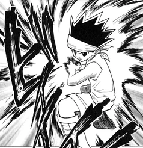
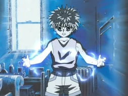
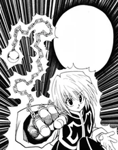
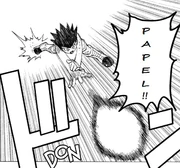
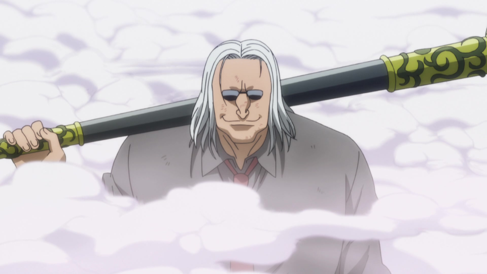
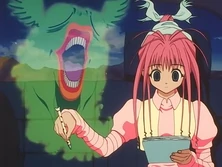

Enredo
Doze anos antes do início da história, Ging Freecss deixou seu filho Gon nas mãos de sua tia Mito na Ilha da Baleia. Gon, que sempre acreditou que seus pais tinham morrido, descobre um dia graças ao aprendiz de seu pai, Kite, que ele ainda está vivo e se tornou um dos melhores Hunters, indivíduos de elite e licenciados para rastrear tesouros secretos, animais exóticos e até mesmo outros indivíduos. Motivado por esta revelação, Gon decide sair de casa e entrar no Exame Hunter, que tem uma série de desafios que buscam testar suas habilidades, como de sobrevivência e trabalho em equipe de seus participantes. Durante o exame, Gon, conhece e faz amizade com outros três participantes: Kurapika, o último membro do clã Kurata, que quer se tornar um Hunter, a fim de vingar sua família e recuperar os olhos escarlate que foram roubados de seus corpos por um grupo de mercenários conhecidos como Gen'ei Ryodan; Leorio, que só quer ser um Hunter para poder pagar seus estudos de medicina; e Killua Zoldyck, um jovem que deixou sua antiga vida como um membro da família mais famosa de assassinos. Assim, este pequeno grupo de amigos embarcam em uma série de aventuras com cada um tentando conquistar seus objetivos.
Mundo
Os Hunters são membros licenciados de elite da humanidade, capazes de rastrear tesouros secretos, animais raros, ou até mesmo outros indivíduos. Para obter uma licença deve-se passar no rigoroso anual Exame Hunter, organizado pela Associação de Hunters, que tem uma taxa de sucesso inferior a um em cem mil. Um Hunter pode ser contemplado com até três estrelas; uma única estrela por fazer "certos feitos notáveis"; duas estrelas se for mentor de um outro Hunter que tenha ganhado uma única estrela; e, finalmente, três estrelas por "executar vários feitos notáveis em várias áreas". Nen é a capacidade de controlar a energia da própria aura, que é constantemente emitida por aqueles que sabem disso ou não. Um usuário de Nen pode fazer um Contrato pelo qual se compromete a seguir certas Limitações, e em troca suas habilidades são reforçadas em relação à forma como essas limitações são rigorosas. Um exemplo disto é Kurapika, que, a fim de ter uma corrente inquebrável, impôs uma limitação que ela só pode ser usada contra os membros do grupo Gen'ei Ryodan, caso ele use ela contra alguma outra pessoa que não seja membro desse grupo morrerá. Explicaremos mais sobre os poderes mais a frente
Personagens
Gon Freecss
Gon é o protagonista da história, um menino de 12 anos que deseja se tornar um Hunter para encontrar seu pai, o lendário Hunter Ging Freecss. Depois de ter vivido muito tempo na floresta, enquanto ele era mais jovem, acabou se tornando muito bom em lidar com animais. Também, possui sentidos extraordinários de olfato e visão.
Leorio
Leorio é um adolescente que inicialmente disse estar participando do Exame Hunter exclusivamente por dinheiro, mas depois revela que é porque ele quer se tornar um médico, e precisa de dinheiro para pagar os seus estudos. Leorio é uma pessoa muito inteligente, que está disposto a ajudar os seus amigos, não importa o que aconteça.
Kurapika
Kurapika é o último membro do clã Kuruta, conhecidos pelos seus olhos escarlate. O seu objetivo consiste em perseguir e destruir o grupo responsável pela destruição de seu clã, o Gen'ei Ryodan.
Killua Zoldyck
Killua é um menino de 12 anos e melhor amigo do protagonista Gon Freecss. Killua pertence a uma famosa família de assassinos, a família Zoldyck. Evitando ter o mesmo futuro de ser tornar assassino, decide participar do exame para ser tornar um Hunter. É muito ágil e forte em combate. Ele tem uma personalidade muito alegre e serena, em momentos de perigo geralmente é frio e calculista.

Hisoka Morow
Hisoka é um dos principais antagonistas da história, nada se sabe sobre o seu passado, talvez pelo fato de que ele não esteja interessado nele. Ele é muito confiante com suas habilidades. Sua única motivação é derrotar oponentes escolhidos de acordo com seus próprios critérios, e também parece sentir prazer a este fato, assim como matar. Hisoka é conhecido por seu estilo elegante, lutador cruel e enganador.
Poderes
Reforço
Intensificação é a habilidade aonde o indivíduo utiliza sua aura para potencializar poderes naturais, seja de um objeto, ou mesmo de seu próprio corpo. Intensificadores são capazes de aumentar o poder de seus ataques físicos e de sua defesa, e possuem melhor vantagem em combate corpo-corpo. Intensificação é a categoria mais balanceada dentre as outras. O indivíduo tem capacidade de focar tanto em uma boa defesa, quanto num bom ataque. E seus "simples" tipos de ataques podem ser bastante poderosos, como a técnica Impacto Big-Bang de Uvogin, aonde seu poder destrutívo se assemelha a um pequeno míssel. Mas também existem técnicas um pouco mais complexas, como por exemplo aumentar o poder de uma habilidade de cura.
Transformação
Transformação é a habilidade do indivíduo em transformar as propriedades de sua aura para que ela imite as propriedades de alguma outra coisa. Coisas criadas através da transformação são aura pura. Um exemplo disto, é o Killua poder transformar sua aura em eletricidade.
Materialização
Materialização é a capacidade do indivíduo criar um objeto através de sua aura. Quando a pessoa dominar a invocação do objeto de seu desejo, ele pode fazê-lo aparecer e desaparecer em um instante. Objetos criados através dessa técnica podem possuir certa "independência": elas podem continuar existindo mesmo se o materializador estiver a uma distância considerável do objeto, ou se o materializador não se deu conta que nem mesmo desmaterializou o objeto.
Emição
Emissão é a capacidade do indivíduo controlar uma certa quantidade de aura, e ter capacidade de separá-la de seu corpo, arremeçando-a. Normalmente a aura que foi separada do corpo e que foi arremeçada diminui de intensidade em um curto período de tempo, mas conforme ao dominar a técnica o usuário poderá manter maiores intensidades por mais tempo.
Manipulação
Manipulação é a capacidade de controlar algo, sejam elas coisas vivas ou não. As habilidades de um manipulador são limitadas. Para aumentar-se o poder de controle sobre aquilo que deseja manipular, o manipulador terá de enfrentar certas condições, algo parecido com o que o materializador pode fazer com o objeto materializado(aumentando seu poder através de condições). Quanto maior o risco que o manipulador sofrer, maior o controle que ele pode ter sobre aquilo que deseja manipular.
Especialização
Especialização é a técnica que não se enquadra em nenhuma das outras categorias. É a categoria de Hatsu mais vaga. Pode ser literalmente qualquer tipo de habilidade paranormal inusitada. É possível ter ideia do tipo de habilidade que o usuário irá ter dependendo de qual efeito ele fez no teste do observar em água.
Galeria de Imagens